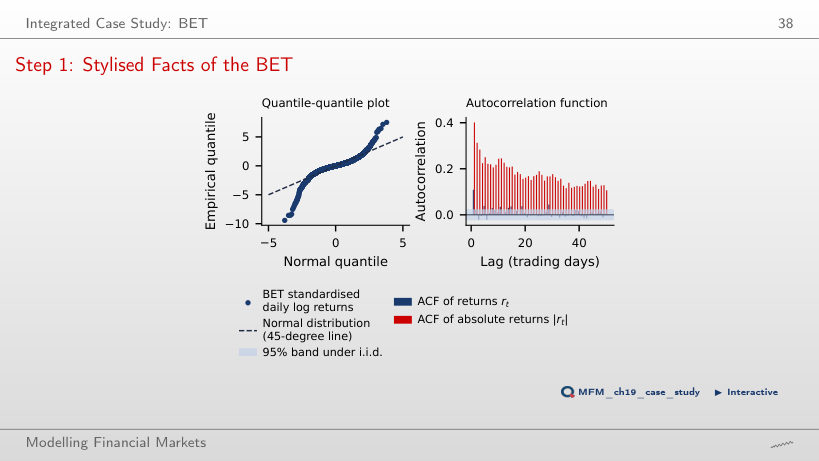
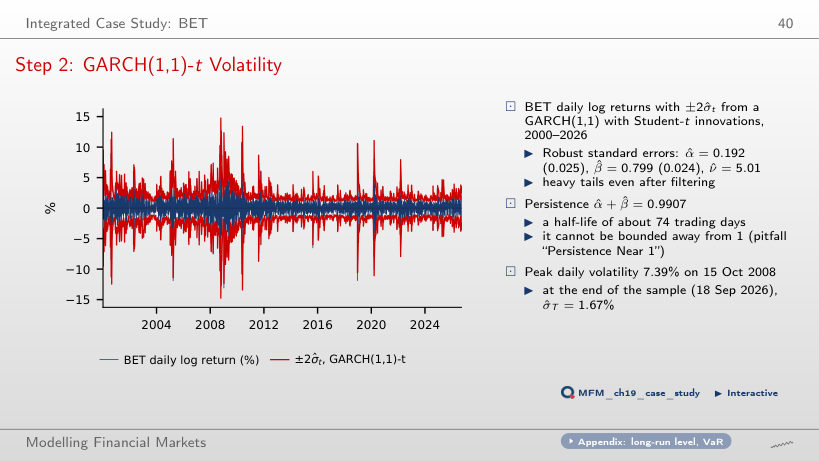
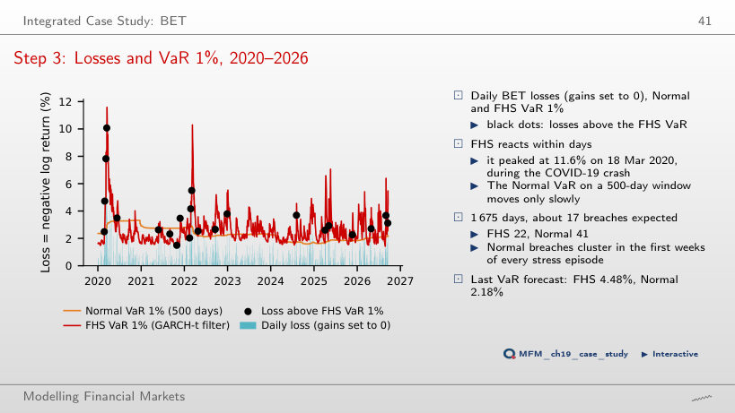
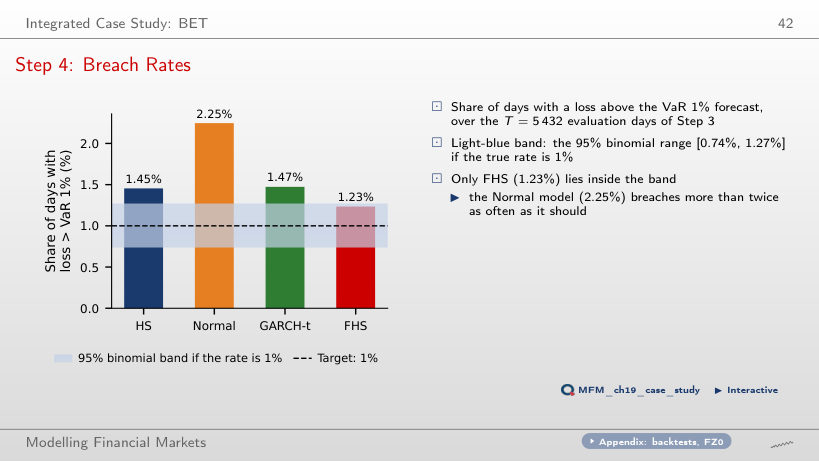
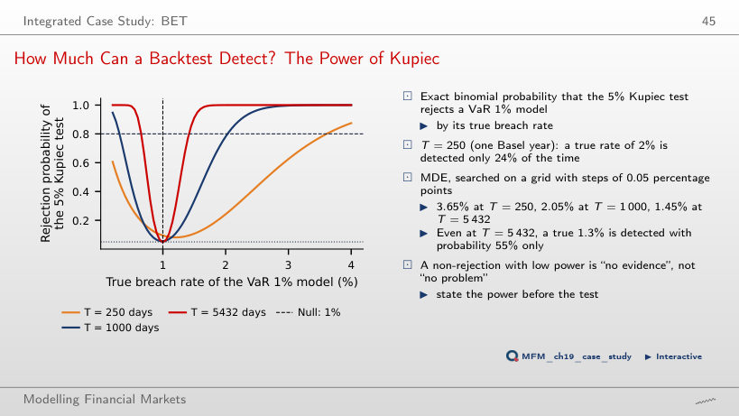
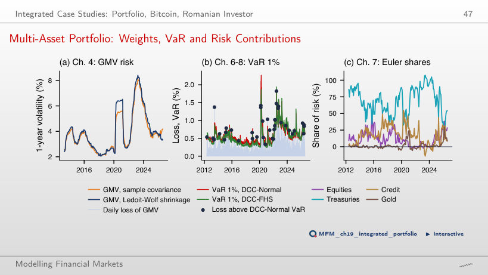
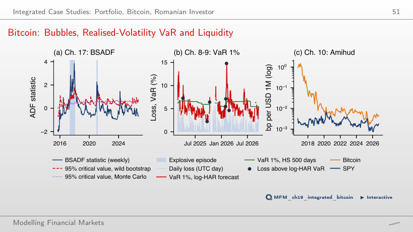
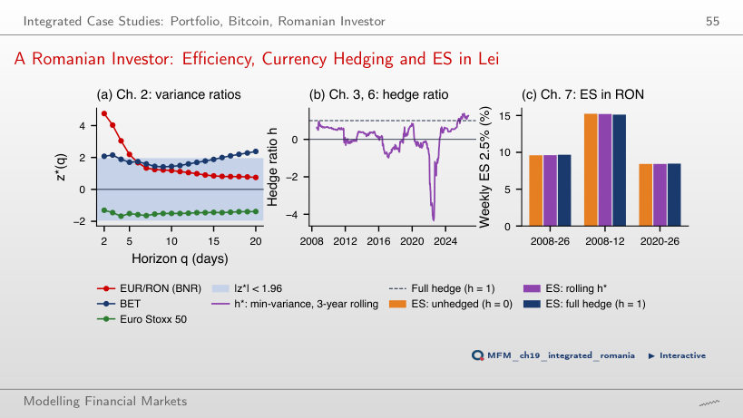
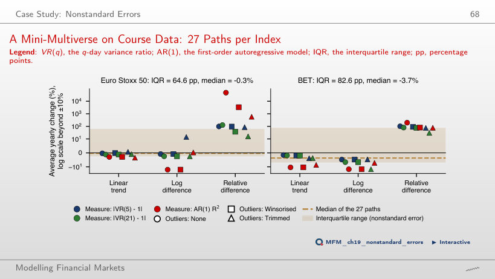

The slide of the lecture is on the left, the same figure on the right, computed in the browser from the same data. The ▶ button moves the parameter step by step.
Integrated Case Study: BET · Integrated Case Studies: Portfolio, Bitcoin, Romanian Investor · Case Study: Nonstandard Errors
Integrated Case Study: BET
Step 1: Stylised Facts of the BET

Answer
For a Pareto-type tail with true index α < 4, the fourth moment is infinite. The Hill estimate of 2.39 and its 95% confidence interval [2.12, 3.03] support this interpretation without proving it. If this tail assumption is correct, the sample excess kurtosis of 11.1 does not estimate a finite parameter; this is why the tail index is reported. The threshold 2 concerns the second moment; the relevant threshold for the fourth moment is 4. Over the full sample, 51 days lie beyond ±4 standard deviations, against 0.42 expected under the Normal distribution.
Step 2: GARCH(1,1)-t Volatility

Answer
After about 74 trading days: ln 0.5 / ln 0.9907. Using β = 0.799 alone ignores the propagation through future shocks; 1/(1 − p) is not the half-life formula. The persistence cannot be bounded away from 1: the likelihood-ratio test of p = 1 gives LR = 1.01, with p-value 0.16. The profile interval for p, [0.975, 1], maps to a half-life interval with a lower end of about 27 days and no finite upper end.
Step 3: Losses and VaR 1%, 2020–2026

Answer
FHS, with 22 breaches; the Normal model has 41. The FHS VaR rose to 11.6% on 18 Mar 2020, while the Normal VaR, estimated on 500 days, adjusts slowly and its breaches cluster in the first weeks of every stress episode.
Step 4: Breach Rates

Answer
No. The Kupiec p-values are below 0.001 (Normal, 122 breaches), 0.001 (GARCH-t, 80), 0.002 (HS, 79) and 0.095 (FHS, 67). Holm compares them, in order, with 0.05/4 = 0.0125, 0.05/3 ≈ 0.0167, 0.05/2 = 0.025 and 0.05: the first three pass, FHS does not. The correction makes the tests stricter, so it cannot add rejections. The FHS rate, 1.23%, lies inside the 95% binomial band [0.74%, 1.27%]; the non-rejection does not establish that the true rate is exactly 1%. A rate above 1% does not imply rejection, and numerical closeness to 1% does not replace the test.
How Much Can a Backtest Detect? The Power of Kupiec

Answer
It rises from 24% to almost 100% (78% at T = 1,000). At T = 250 the test rejects at 0 breaches or at 7 or more. The 5% level is nominal and concerns the null; 1 − 5% is not the power either. With the asymptotic critical value 3.84, the actual rejection probability at the null rate of 1% is 9.5% at T = 250. On the page grid, the first true rate detected with at least 80% power is 3.65% at T = 250 (an excess of 2.65 percentage points over the target), 2.05% at T = 1,000 and 1.45% at T = 5,432. A non-rejection with low power means “no evidence”, not “no problem”.
Integrated Case Studies: Portfolio, Bitcoin, Romanian Investor
Multi-Asset Portfolio: Weights, VaR and Risk Contributions

Answer
The FHS history reuses the data on which the GMV weights were optimised, which can make the historical risk too small: the mean standard deviation of the standardised portfolio returns across the FHS windows is 0.91, while the standard deviation of the out-of-sample standardised returns is 0.95. FHS multiplies the empirical quantile of the standardised losses by the current volatility: the mean VaR is 0.55%, against 0.58% for DCC-Normal. DCC-FHS has 52 breaches against 35.8 expected (Kupiec p 0.011); DCC-Normal has 40 breaches and passes all three tests. These results support the diagnosis without isolating the contribution of each mechanism. The comparison is retrospective: the VaR model is chosen on the same period on which it is evaluated.
Bitcoin: Bubbles, Realised-Volatility VaR and Liquidity

Answer
Only with probability 47%; the minimum detectable effect at 80% power is 2.70%. Both models have 7 breaches against 4.2 expected (p = 0.214), so the practical difference is capital: a mean VaR of 5.29% for log-HAR, against 6.24% for HS.
A Romanian Investor: Efficiency, Currency Hedging and ES in Lei

Answer
The negative association between the Euro Stoxx 50 return and the EUR/RON change (β = −0.52, t = −2.61) partly offset the losses: when EUR/RON rises, the leu depreciates and the value in lei of the euro investment rises, other things equal. The association is not a rule that holds every week. The EUR/RON volatility is 4.6% a year, against 20.9% for the Euro Stoxx 50. Weekly ES 2.5%, Aug 2008 – Sep 2026: 9.60% unhedged, 9.67% with a full hedge; in Aug 2008 – Dec 2012 the order reverses (15.23% and 15.12%). This retrospective comparison does not replace the decision rule of the lecture, which chooses the full hedge (h = 1).
Case Study: Nonstandard Errors
A Mini-Multiverse on Course Data: 27 Paths per Index

Answer
About 2.6 pp (BET: 6.7 pp, against 82.6 pp over the full grid). With relative differences, the medians are +98.7% and +80.3% a year: the model of the yearly change separates the distributions of the estimates the most. The sampling benchmark, 1.35 × the median SE, is 41.3 pp over the full grid and 3.9 pp for the nine linear-trend paths. The comparison is descriptive, not an estimate of the share of dispersion due to each choice.
BET index: official daily closing values, 6 Jan 2000 – 18 Sep 2026, log returns in %. One-day VaR forecasts: rolling window of 1,000 days (500 for HS and the Normal model), GARCH re-estimated every 21 days, evaluation from 3 Jan 2005. Mini-multiverse: daily closes of the Euro Stoxx 50 (EODHD) and the BET, 2002–2018. Integrated case studies: eight multi-asset ETFs (adjusted prices, 2007–2026), Bitcoin (daily closes 2014–2026, 5-minute bars 2024–2026), the BET, the Euro Stoxx 50 and the BNR EUR/RON reference rate (2005–2026).